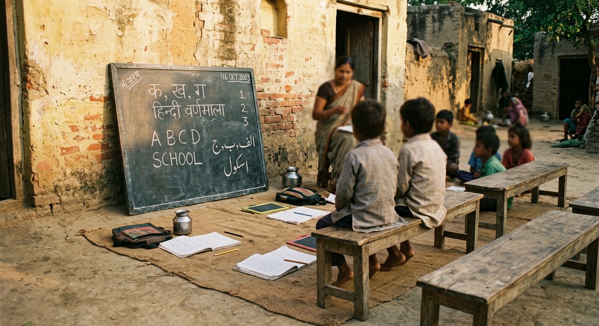

Gallery
Scenes, not poses.
The society is pre-launch, so nothing here is a record — every frame is a representative scene of how the work will look, Insha'Allah. And the rule is fixed before the first photograph: beneficiaries are never photographed, not for donors, not for the press, not for this website. The gallery shows welfare from the other side of the table: boards, benches, kits, pumps, machines and registers.



On consent: staff photographs are taken with the subject's say over the frame; villagers at a distance appear only where the frame's owner agreed. Requests to withdraw a frame are honoured within a week, no questions asked.